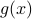

Scaling & Derivatives
Ready, set, go! There's one last property of Fourier transforms to mention, which we won't prove, but it's important to know. It's the analog of Rayleigh's identiy for Foruier Transforms.

In fact, the inner product is also invariant under a Fouerit trasfmoration!
We won't go through the proof in class; you can find it in notes. It involves the inverse Fourier transform. It turns out this property is mportant for linear systems – it ttells us that the FT is a unitary transformation – and it also turns out to be important for the famous uncertainty princkiple of quantum mechanics.
But we don't want to spend too much time on more properties; we want to move on to Convolution for now.
Convolution
Let's remember the first time we saw convolution was in the context of the heat equation, when we saw that the soultions coulsd be written as a convoultion of the intiial condition with the fundamental solution.
This time approach it from an electrical engineer's viewpoint. It turns out that convolution is the fundamental operation of signal processing –which we'll take to mean as using one signal to modify another signal. We can process signals both in the time doamin and in the frequency domain, and often we want to see how they're related – how an operation in one domain affects the other.
Modifying Spectra
The most common operation or modification that EE's perform on a signal is to scale the spectrum of one signal by another. Mathematically, this just means that we multiply the Fourier transforms of two functions and  together to create a new signal
together to create a new signal  whose FT is the product . So we're scaling each of the frequency components of by the corresponding frequency component in .
whose FT is the product . So we're scaling each of the frequency components of by the corresponding frequency component in .
So what operation do we need to do in the time domain so that the spectra end up multiplying together in the frequency domain? As a spoiler alert, the answer is convolution – but this result is honestly quite surprising and unexpected! Our approach to figuring this out is a classical mathematical sort of argument, where we pretend that we've found the solution, and then work out what form that solution's got to have.
So we started with the expression for and began to massage it.
Expand out each of the FT's in the product. Remember to use a different variable of integration for each one! We called them x and y today.
Combine the two separate integrals into one double-integral, and combine the two exponential factors.
Take out the
 into its own integral, so we're left with an inner integral over of , and an outer integral over
into its own integral, so we're left with an inner integral over of , and an outer integral over  .
.Motivated by the sum in the exponent, we make a change of variables in the inner integral to , which puts a
 in the exponent and a the argument of .
in the exponent and a the argument of .Then we switch the order of integration from to …
Notice that the inner integral is really a function of
(since it starts out as a funciton of and but then we integrate out the ).And lo and behold, if we define
then we're just left with the Fourier transform of on the right hand side! Wow.
The punchline is that if we combine and together in the special way given by , then their Fourier transforms multiply together to give ! So we've solved the problem. And as usual, now that that we've actually solved the problem, we turn everything around and then define the convolution with that completely unmotivated formula. Furthermore, we can also announce to the world the remarkable convolution theorem that the Fourier transform of a convolution is the product of Fourier transforms, wow! (But of course, it's not tooooo terribly remarkable – we started backwards with the property we wanted, and then figured out what definition we needed…Really, the problem is just the question of how to combine functions in the time domain so that their FTs multiply in the frequency domain).
Anyways now that we've defined the convolution, there's a number of things to say:
The dual result also holds, where the Fourier transform of a product is the convolution of the Fourier transforms; i.e.,
As we'll show on the homework, the triangle function turns out to be the convolution of the rectangle function with itself. Since the rectangle function's FT is the sinc function, the FT of the triangle function is the sinc squared – which we indeed found. A good consistenty check.
Properties of convolution
Convolution is a lot like multiplication. The game is rigged, because convolution is really just multiplication in the frequency domain.
Convolution is commutative; i.e.,
We can prove this in two ways: we can prove it directly from the definition by making a clever change of variables in the integral, or we can argue that since and
just multiply in the frequency domain, the order doesn't matter.
Convolution is also associative – it doesn't matter what order you perform the convolutions when you have three functions; i.e.,
Again, we can prove this in two ways: it's a tedious ‘‘pain in the ass’’ to do directly show this from the definition, or we can also appeal to the associativity of multiplication in the frequency domain.
Bad things might happen, since the integrals might not converge! But the rigor policae are off duty…‘‘If you're attacked by a mathematician, just say, ‘chill, brother’ ’’
One last property: does convolution have an identity? That is, is there a mystery function such that for all ? Well, if we appeal to the frequency-domain argument, we can write out the definition of what such an identity would be…but we end up with a nasty integral that doesn't appear to converge in any classical sense!
As we know, the delta-function will come to the rescue here – it turns out that it's the appropriate identity for convolution because . Well really, the delta function isn't really a function in a classical sense. It's pretty cool that we have to ‘‘leave the realm of classical’’ functions in order to make sense of the identity of the convolution. We'll be spending quality time with this fuzzy little creature soon…
Visualizing and Interpreting the Convolution
In Prof. Osgood's opnion, it's not worth your effort to try to visualize the convolution in terms of any integrals or whatever! It's like what he said about visualizing teh orthogaonalizty of functions: ‘‘don't lie there in bed and stare at the ceiling…’’
On a similar note, there are multiple possible interpretations for the convolution, which come up in different contexts, so you don't do yourself any favor by limiting yoruself to just one interpretation! Nevertheless, we can have an operationally useful bit of intuition. In practice, convolution is typically associtaed with smoothing and averaging a function (in a qualitative sence).
This leads to the Maxim that ‘‘ is at least as good (and sometimes better!) as and alone…it inherist the ‘‘best’’ properties of each ofhem separately, and might even be better. What does this Maxim mean?
As an example, when you convolve the rectangle function with itself, it turns into a triangle function. Now the rectangle function has a jump discontinuity in the zero'th derivative, but the triangle function is continuous, and only has a cusp a.k.a. a discontinuity in its first derivative.
Derivative Theorem
Another example of the ‘‘smoothing’’ property of convolution comes in the form of the Derivative theorem:
As long as is differentiable, even if you convolve it with a really nasty function , then their convolution is still differentiable, and in fact ! Rather remarkable…
In fact, if both and are nice and differentiable, we can put the derivative of their convolution on any of them that we want: . So in this sense, convolution isn't quite the same as multiplication, because there's no real ‘‘product rule’’ for convolution.
Next time around, we'll do a few applications of convolutions:
filters. EE's think of this a lot, high pass and low pass, and so on…
the central limit theorem! When you convolve a lot of distributions together, why do you end up with a Gaussian?
also to differential equations. We saw this earlier with the heat equation and it will come up again!